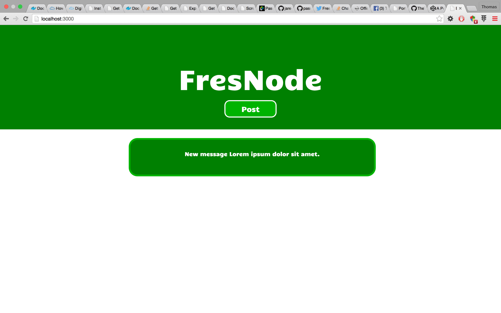
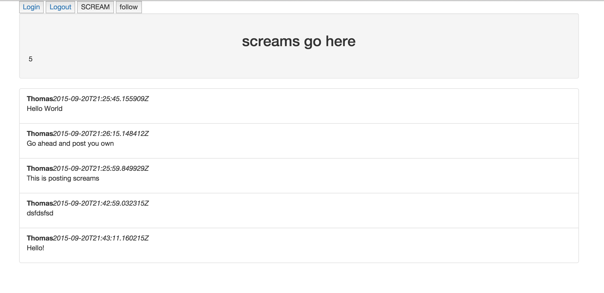
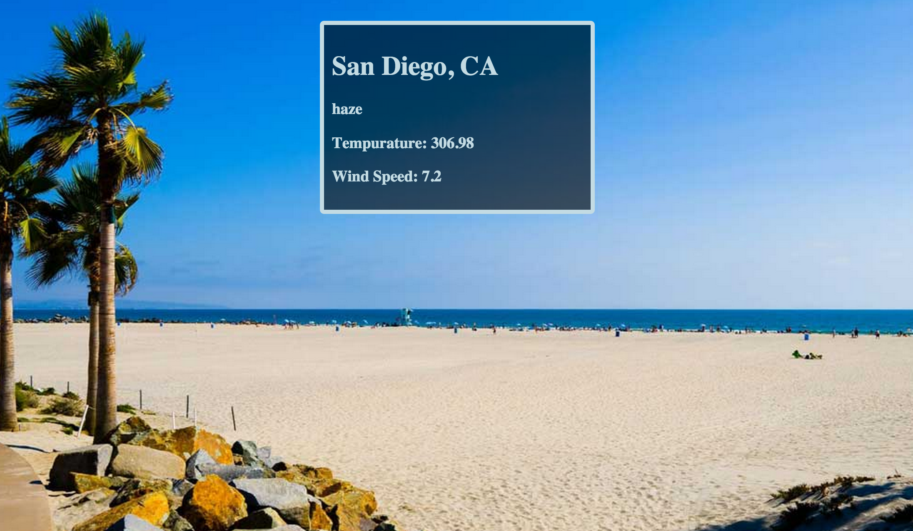

FresNode
FresNode is a project I’m working on for the Fresno Node.js meetup group. The users will be able to log in with an oAuth of their choosing, and post a message! The backend is built on node.js, with handlebars as the templating engine. Information is stored using MongoDB.
For further details on FresNode, please visit the repository on Github.

Twitter Clone aka “Screamer”
This was a project I did for the web development bootcamp at Fresno City College. It is meant to be a very simplistic clone of twitter. Users log in with their google account, and then they can post “screams”. The backend is written in Golang, and powered by Google App Engine. Everything is stored in the app-engine datastore.
For further details on Screamer, please visit the repository on Github.

Get the weather!
This is a fun little page I made to display the current weather in San Diego, California. It uses an API from Open Weather Map, and even changes the background picture based on weather conditions!
Check it out! Code on Codepen.
